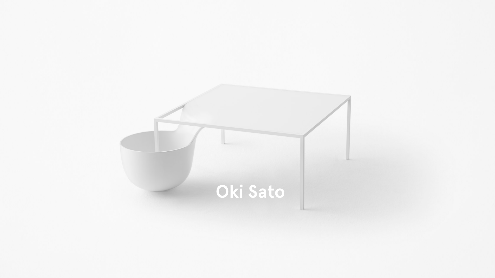
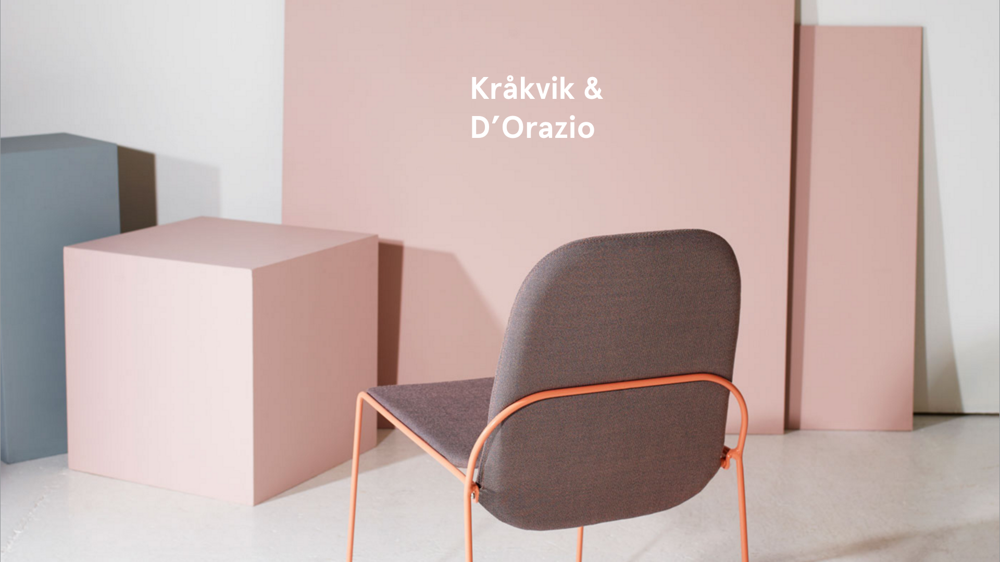

The Japanese collective led by architect Oki Sato (1977) reinvents minimalist design by adding a touch of unexpected poetry and humour. In Japanese, “nendo” means clay which defines the studio’s will to imagine light and flexible objects, furniture and architecture. Their conceptual creations sharply link technology and craft as well as sensibility and innovation. Something of an innocent personality that Oki Sato confirms: ‘Personally I like to eat sweets very much. We have sweet meetings everyday.’

Michael Anastassiades launched his studio in 1994 to explore contemporary notions of culture and aesthetics through a combination of product, furniture and environmental design. Positioned between fine art and design, his work aims to provoke dialogue, participation and interaction. He creates objects that are minimal, utilitarian and almost mundane, yet full of vitality one might not expect.He has designed products with various leading manufacturers including FLOS, Lobmeyr and Svenskt Tenn. In 2007 he set up the company Michael Anastassiades Ltd to produce his signature pieces; a collection of lighting, furniture, jewellery, and tabletop objects.

Kråkvik&D'Orazio is a creative studio based in Oslo, Norway, run by Italian-born Alessandro D'Orazio and Oslo native Jannicke Kråkvik.The studio works within interior styling, design and exhibitions, and develops ideas and concepts for commercial and editorial clients.The studio works worldwide.